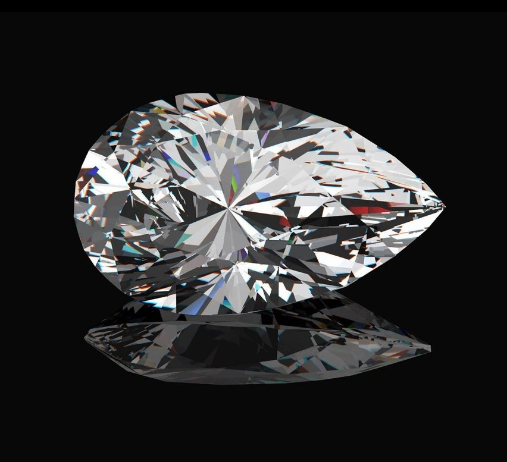

-

 White Carbon Pvt. Ltd., headquartered at Opera House, Mumbai, trades in loose diamonds and jewelry since 25 years under the leadership of Gyanchand Dhadda and Uttam Dhadda.
White Carbon Pvt. Ltd., headquartered at Opera House, Mumbai, trades in loose diamonds and jewelry since 25 years under the leadership of Gyanchand Dhadda and Uttam Dhadda. -

The Diamonds of White Carbon
White Carbon's diamond creations are exquisite treasures that become a part of you, illuminating your style. In settings that reveal their complete magnificence, WC Diamonds radiate a sizzling brilliance.
Why WC Diamonds?
Economic Procuring:White Carbon has access to diamonds from nearly all suppliers in the local markets at Mumbai, Surat, and other major Indian cities giving the edge to procure a wide range of solitaires at the cheapest price possible. Please fill out the details of the diamonds you require on the Customer Requirement Page and we will get back to you in 48 hours.
Responsible Procuring:White Carbon makes sure to source diamonds that ecologically and ethically responsible.
-

Educated Purchase:White Carbon Gemologists help you educate the basics of diamonds and suggest you a purchase in your price range. You can find basics of diamonds in our Education Section. Should you require a more detailed knowledge on diamonds and current news on the diamond industry, please visit the White Carbon Blog.
-
White Carbon Jewelry
Contemporary, yet classic, the designs at WC Jewelry are timeless creations to wear for a lifetime. Each diamond at White Carbon is hand-picked by our trained gemologists for choosing only the best to set up in WC Jewelry.
-
White Carbon Jewelry
Contemporary, yet classic, the designs at WC Jewelry are timeless creations to wear for a lifetime. Each diamond at White Carbon is hand-picked by our trained gemologists for choosing only the best to set up in WC Jewelry.
Why WC Jewelry?
Personalized Jewelry:White Carbon allows you to personalize your jewelry design which we then get manufactured by some of the finest local craftsmen.
Quality:At White Carbon, we believe in delivering high quality polished and finished jewelry with the best quality diamonds possible in the required price range. Email us your design on customer.service@whitecarbon.in to help us inform you its gold and diamond quantity and total value.